2024 National 5 Mathematics - Paper 2 questions
Source: Scottish Qualifications Authority (SQA) / Qualifications Scotland. This is a StemInteract HTML companion, not an official HTML edition. Selectable text is supplied alongside original page images. Use the images or original PDF for equations, powers, fractions, vector notation, tables and diagrams; text extraction cannot fully preserve mathematical layout.
Jump to a question
PDF page 1
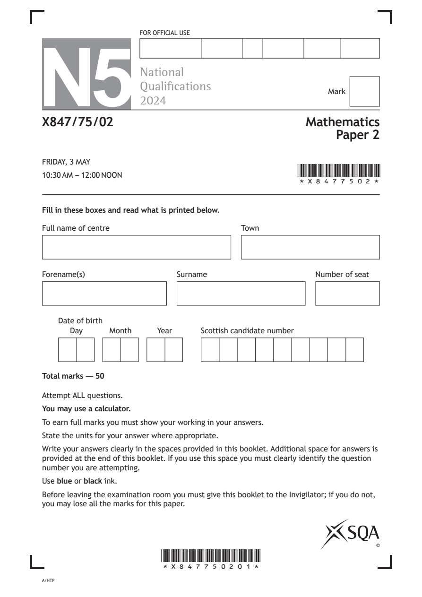
Selectable page text
FOR OFFICIAL USE
N5
National
Qualications
Mark
2024
X847/75/02 Mathematics
Paper 2
FRIDAY, 3 MAY
10:30 AM – 12:00 NOON
*X8477502*
Fill in these boxes and read what is printed below.
Full name of centre Town
Forename(s) Surname Number of seat
Date of birth
Day Month Year Scottish candidate number
Total marks — 50
Attempt ALL questions.
You may use a calculator.
To earn full marks you must show your working in your answers.
State the units for your answer where appropriate.
Write your answers clearly in the spaces provided in this booklet. Additional space for answers is
provided at the end of this booklet. If you use this space you must clearly identify the question
number you are attempting.
Use blue or black ink.
Before leaving the examination room you must give this booklet to the Invigilator; if you do not,
you may lose all the marks for this paper.
©
*X847750201*
A/HTPPDF page 2
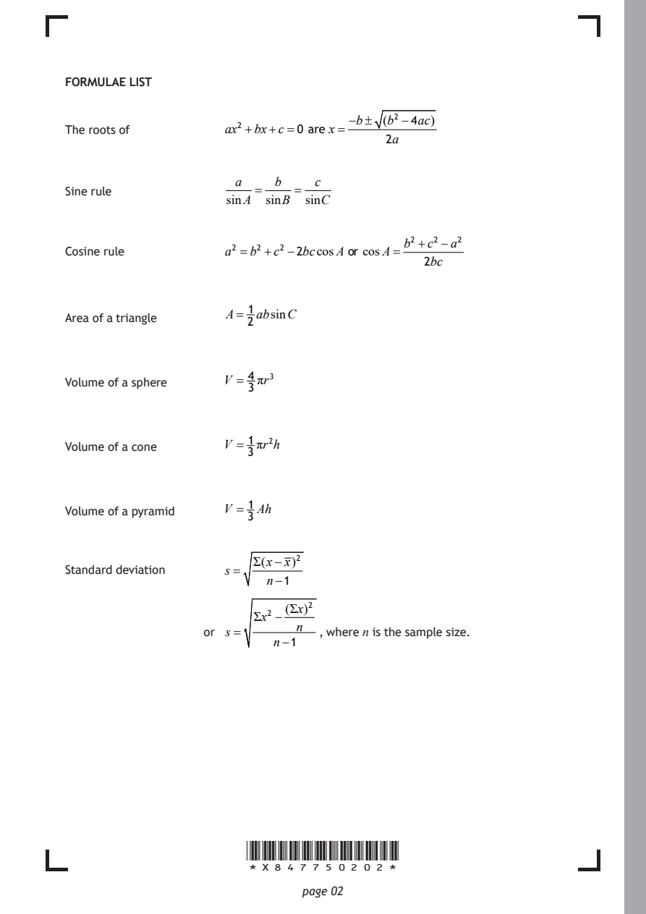
Selectable page text
FORMULAE LIST
−b± (b² −4ac)
The roots of ax² +bx+c=0 are x=
2a
a b c
Sine rule = =
sinA sinB sinC
b² +c²−a²
Cosine rule a² =b²+c² −2bccosA or cosA=
2bc
1
A= absinC
Area of a triangle
2
4
Volume of a sphere V = πr³
3
1
Volume of a cone V = πr²h
3
1
Volume of a pyramid V = Ah
3
Σ(x−x)²
Standard deviation s =
n−1
(Σx)²
Σx² −
n
or s = , where n is the sample size.
n−1
*X847750202*
page 02PDF page 3
Paper 2, Question 1Paper 2, Question 2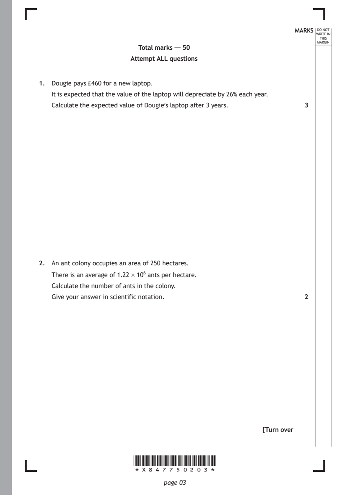
Selectable page text
MARKS _{W}^{D}_{R}^{O}_{I} _{T}^{N}OT
E IN
THIS
MARGIN
Total marks — 50
Attempt ALL questions
1. Dougie pays £460 for a new laptop.
It is expected that the value of the laptop will depreciate by 26% each year.
Calculate the expected value of Dougie’s laptop after 3 years. 3
2. An ant colony occupies an area of 250 hectares.
There is an average of 1.22 × 10⁶ ants per hectare.
Calculate the number of ants in the colony.
Give your answer in scientific notation. 2
[Turn over
*X847750203*
page 03PDF page 4
Paper 2, Question 3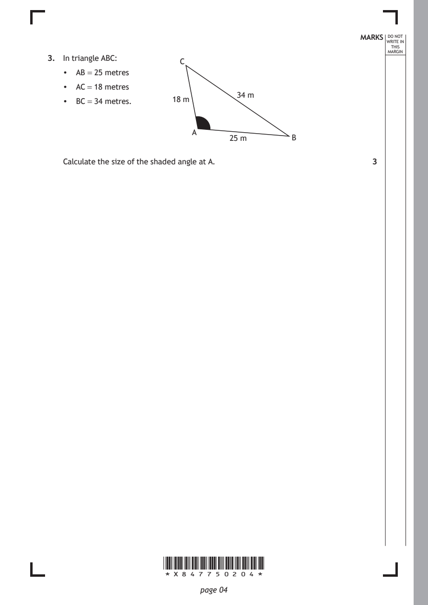
Selectable page text
MARKS _{W}^{D}_{R}^{O}_{I} _{T}^{N}OT
E IN
THIS
MARGIN
3. In triangle ABC:
C
• AB = 25 metres
• AC = 18 metres
34 m
• BC = 34 metres. 18 m
A
25 m B
Calculate the size of the shaded angle at A. 3
*X847750204*
page 04PDF page 5
Paper 2, Question 4Paper 2, Question 5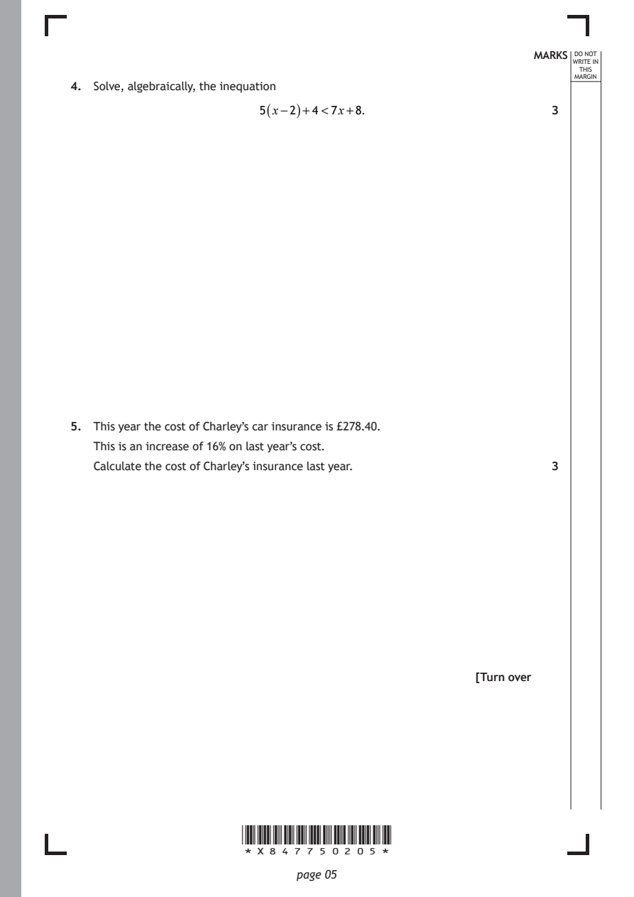
Selectable page text
MARKS _{W}^{D}_{R}^{O}_{I} _{T}^{N}OT
E IN
THIS
MARGIN
4. Solve, algebraically, the inequation
5(x−2)+4<7x+8. 3
5. This year the cost of Charley’s car insurance is £278.40.
This is an increase of 16% on last year’s cost.
Calculate the cost of Charley’s insurance last year. 3
[Turn over
*X847750205*
page 05PDF page 6
Paper 2, Question 6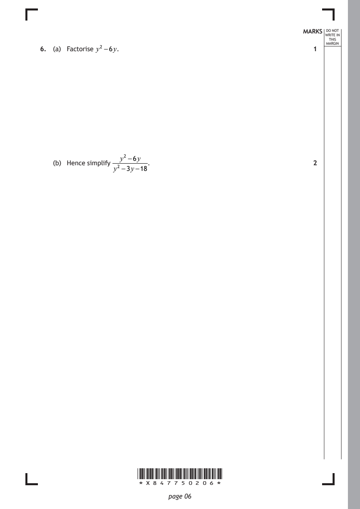
Selectable page text
MARKS _{W}^{D}_{R}^{O}_{I} _{T}^{N}OT
E IN
THIS
ARGIN
6. (a) Factorise y² −6y. 1 ^{M}
y² −6y
(b) Hence simplify . 2
y² −3y−18
*X847750206*
page 06PDF page 7
Paper 2, Question 7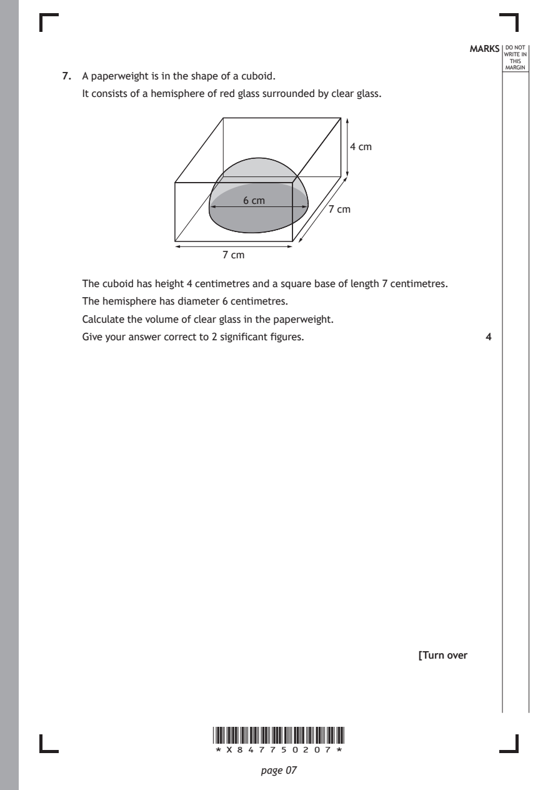
Selectable page text
MARKS _{W}^{D}_{R}^{O}_{I} _{T}^{N}OT
E IN
THIS
MARGIN
7. A paperweight is in the shape of a cuboid.
It consists of a hemisphere of red glass surrounded by clear glass.
4 cm
6 cm
7 cm
7 cm
The cuboid has height 4 centimetres and a square base of length 7 centimetres.
The hemisphere has diameter 6 centimetres.
Calculate the volume of clear glass in the paperweight.
Give your answer correct to 2 significant figures. 4
[Turn over
*X847750207*
page 07PDF page 8
Paper 2, Question 8Paper 2, Question 9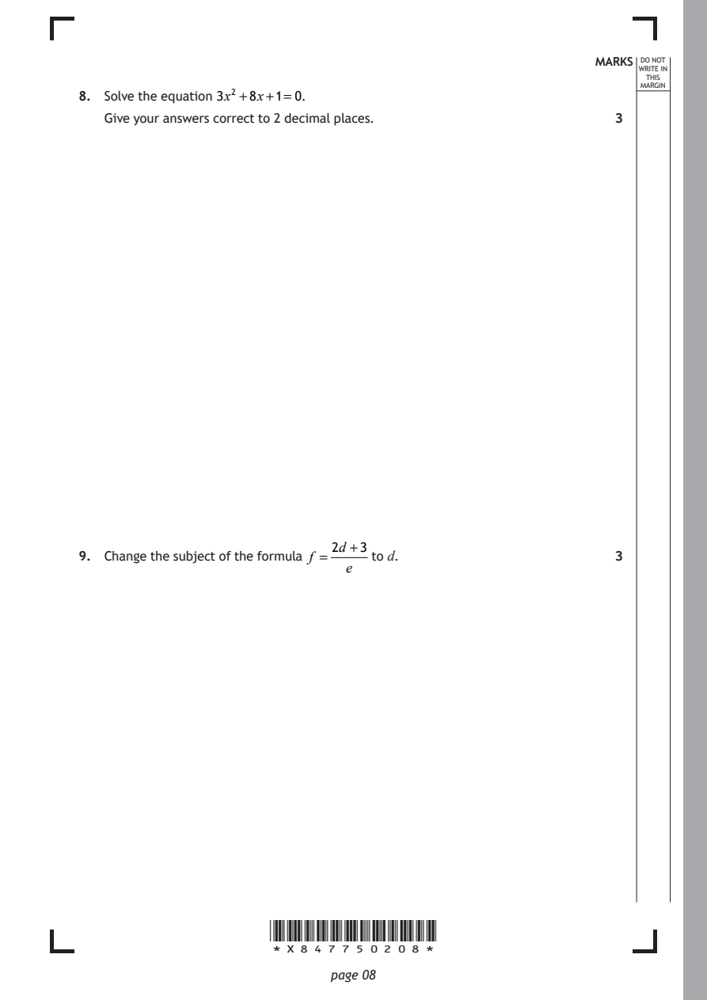
Selectable page text
MARKS _{W}^{D}_{R}^{O}_{I} _{T}^{N}OT
E IN
THIS
MARGIN
8. Solve the equation 3x² +8x+1=0.
Give your answers correct to 2 decimal places. 3
2d +3
9. Change the subject of the formula f = to d. 3
e
*X847750208*
page 08PDF page 9
Paper 2, Question 10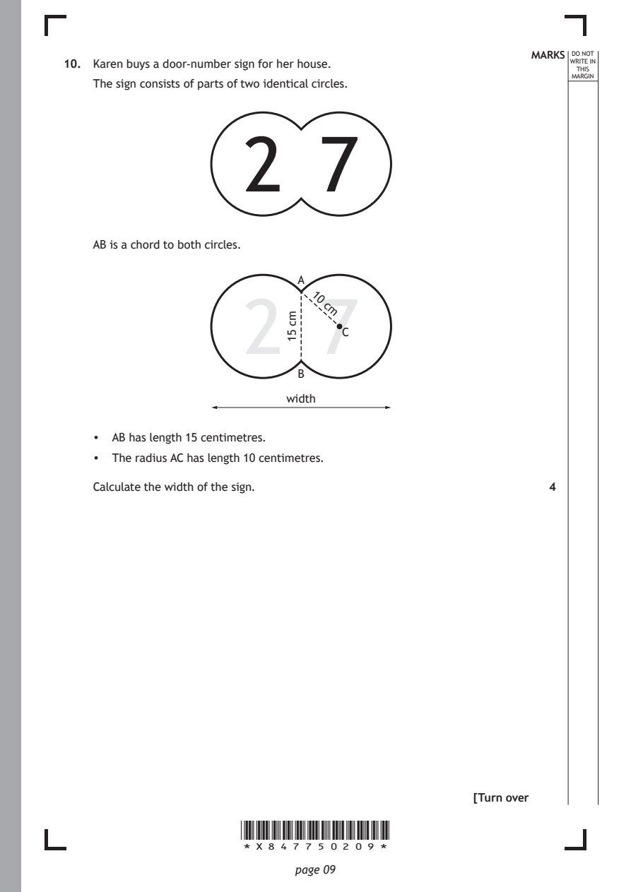
Selectable page text
MARKS _{W}^{D}_{R}^{O}_{I} _{T}^{N}OT
10. Karen buys a door-number sign for her house. E IN
THIS
MARGIN
The sign consists of parts of two identical circles.
2 7
AB is a chord to both circles.
2 7
*X847750209*
page 09
mc
51
A
1
0
c
m
C
B
width
• AB has length 15 centimetres.
• The radius AC has length 10 centimetres.
Calculate the width of the sign. 4
[Turn overPDF page 10
Paper 2, Question 11Paper 2, Question 12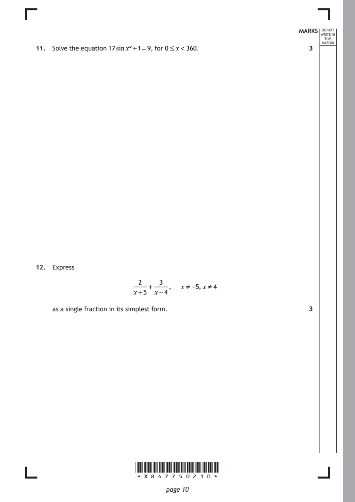
Selectable page text
MARKS _{W}^{D}_{R}^{O}_{I} _{T}^{N}OT
E IN
THIS
ARGIN
11. Solve the equation 17sinx°+1=9, for 0≤ x<360. 3 ^{M}
12. Express
2 3
+ , x≠ −5, x≠ 4
x+5 x−4
as a single fraction in its simplest form. 3
*X847750210*
page 10PDF page 11
Paper 2, Question 13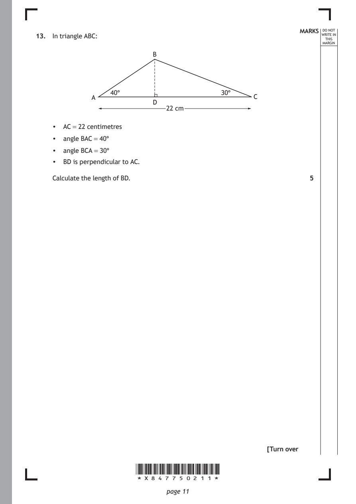
Selectable page text
MARKS _{W}^{D}_{R}^{O}_{I} _{T}^{N}OT
13. In triangle ABC: E IN
THIS
MARGIN
B
40° 30°
A C
D
22 cm
• AC = 22 centimetres
• angle BAC = 40°
• angle BCA = 30°
• BD is perpendicular to AC.
Calculate the length of BD. 5
[Turn over
*X847750211*
page 11PDF page 12
Paper 2, Question 14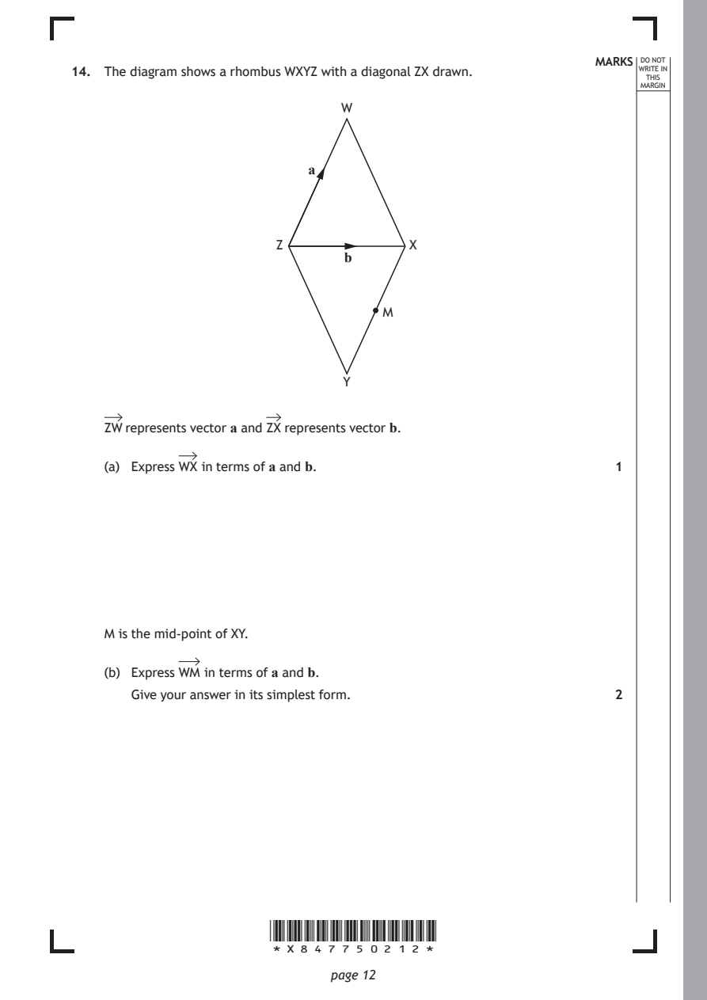
Selectable page text
MARKS _{W}^{D}_{R}^{O}_{I} _{T}^{N}OT
14. The diagram shows a rhombus WXYZ with a diagonal ZX drawn. E IN
THIS
MARGIN
W
a
Z X
b
M
Y
ZW represents vector a and ZX represents vector b.
(a) Express WX in terms of a and b. 1
M is the mid-point of XY.
(b) Express WM in terms of a and b.
Give your answer in its simplest form. 2
*X847750212*
page 12PDF page 13
Paper 2, Question 15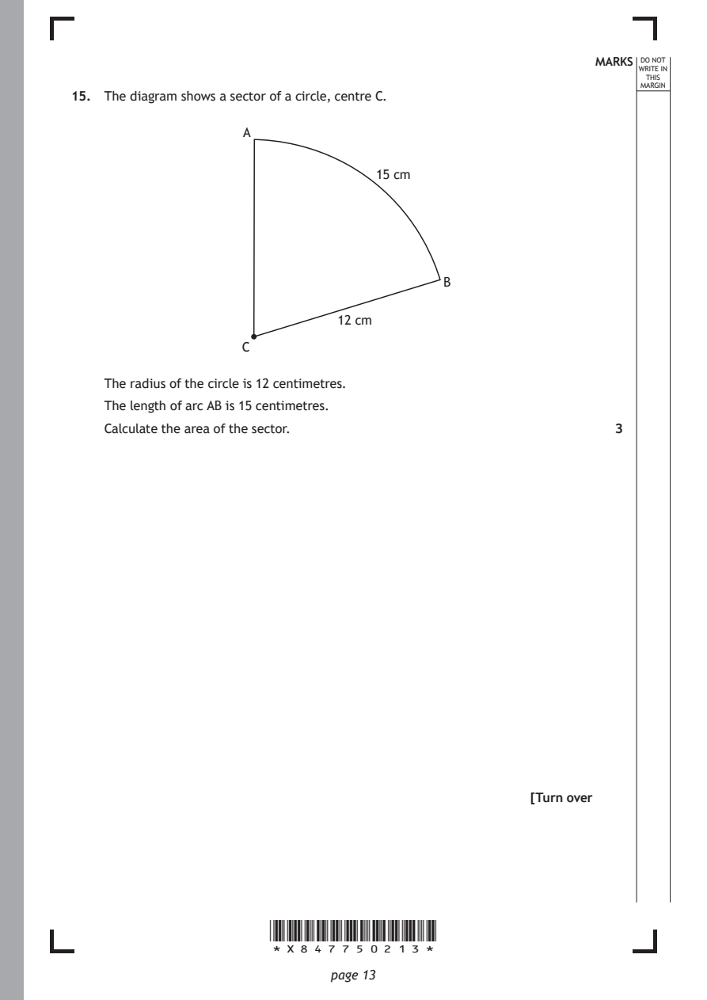
Selectable page text
MARKS _{W}^{D}_{R}^{O}_{I} _{T}^{N}OT
E IN
THIS
MARGIN
15. The diagram shows a sector of a circle, centre C.
A
15 cm
B
12 cm
C
The radius of the circle is 12 centimetres.
The length of arc AB is 15 centimetres.
Calculate the area of the sector. 3
[Turn over
*X847750213*
page 13PDF page 14
Paper 2, Question 16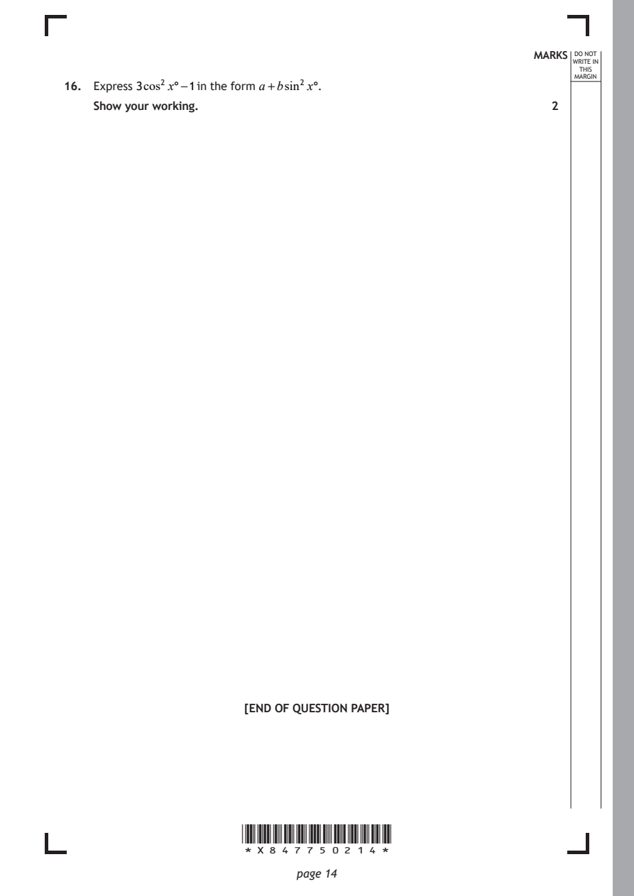
Selectable page text
MARKS _{W}^{D}_{R}^{O}_{I} _{T}^{N}OT
E IN
THIS
MARGIN
16. Express 3cos² x°−1 in the form a +bsin² x°.
Show your working. 2
[END OF QUESTION PAPER]
*X847750214*
page 14PDF page 15

Selectable page text
MARKS _{W}^{D}_{R}^{O}_{I} _{T}^{N}OT
E IN
THIS
MARGIN
ADDITIONAL SPACE FOR ANSWERS
*X847750215*
page 15PDF page 16

Selectable page text
MARKS _{W}^{D}_{R}^{O}_{I} _{T}^{N}OT
E IN
THIS
MARGIN
ADDITIONAL SPACE FOR ANSWERS
*X847750216*
page 16